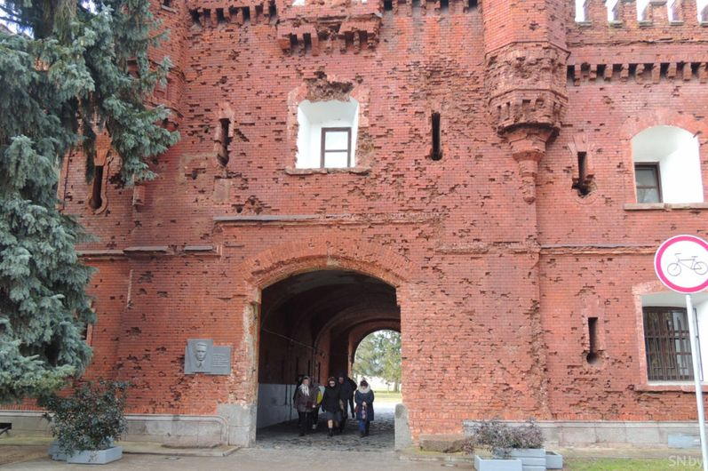
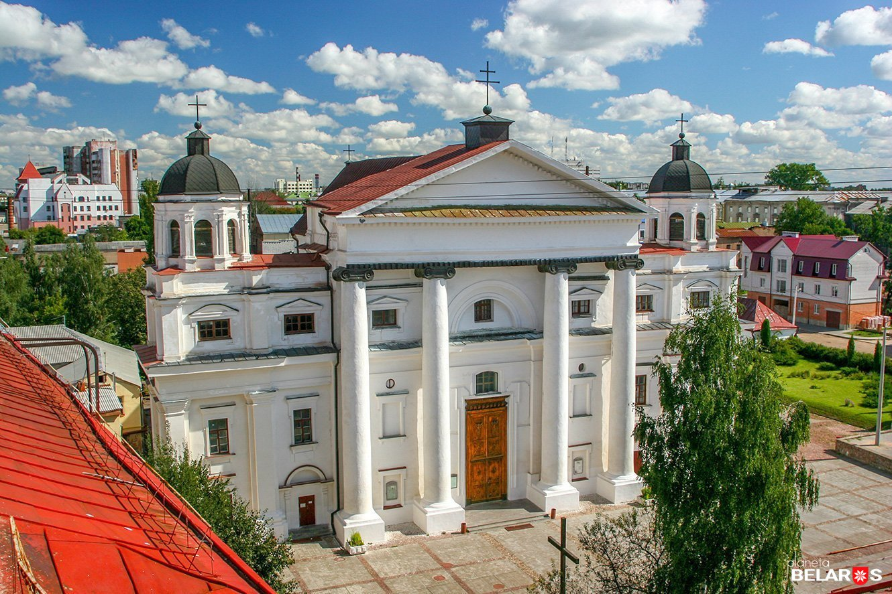
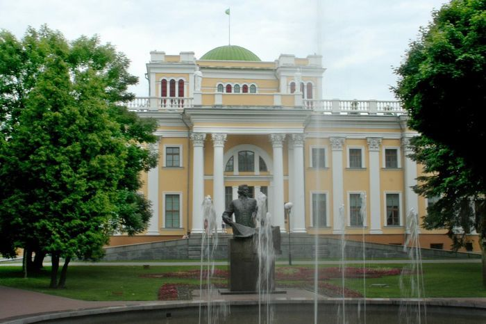

Исторические места Гомеля
Гомель изобилует историческими памятниками, которые стоит посетить, чтобы узнать больше о культуре и прошлом города.
1. Светлогорская крепость
Одна из значимых исторических достопримечательностей Гомеля. Крепость была построена в XVI веке и сегодня является популярным туристическим объектом.
2. Костёл святого Станислава
Этот красивый костёл был построен в начале XX века и является выдающимся примером неоготической архитектуры.
3. Гомельский дворцово-парковый комплекс
Комплекс зданий, включающий в себя дворец Румянцевых и Паскевичей, а также обширные парковые территории.
